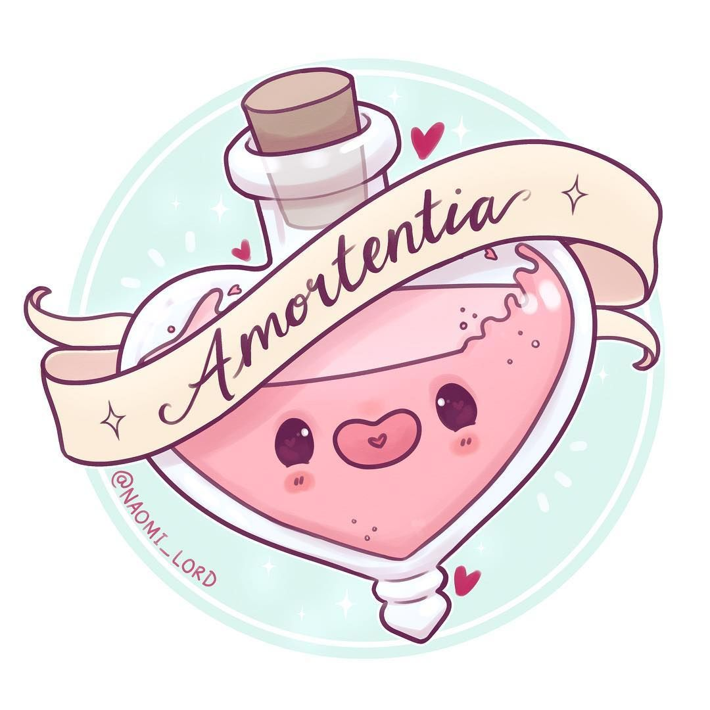

<!DOCTYPE html>
<html>
    <head>
        <meta charset="utf-8">
        <title>PotterScience</title>
        <meta name="description" content="PotterScience">
        <link rel="stylesheet" href="styles.css">
        <link rel="icon" href="star-white.jpg">
    </head>
</html>

<body>
    <div class="topnav">
        <a href="index.html"><br>Home</a>
        <a class="active" href="facts.html"></a>
        <a href="RantRoom.html"><br>RantRoom</a>
        <a href="Hogsmeade.html"><br>Hogsmeade</a>
      </div>

      <h1 class="Heading1">Love Potions? For real??</h1>
      <br>
      <p class="pb">You might be thinking that tis a dumb idea to state whether the Amortentia is real or not.
          Most witches in Hogwarts would go crazy for them! The Love Potion makes their drinker to be obsessed with the person who gave it to them.
          Ron was one of its victims! In the story, Harry then decided to bring the infatuated Ron to Professor Slughorn for the antidote.
          They used four Wiggentree twigs, then Prof Slughorn stirred the cauldron until the potion turns orange. He added castor oil until the potion turns blue, and et voila!
          The antidote was served, and Ron was saved. The potion gave you this lost in "love" state of mind, and it is pretty quirky.
         Its effects are scary honestly, and sad to say; love potions really do exist! Well, they do affect people differently than Harry's Amortentia version, but somehow the people who got affected will be infatuated to the specific person.
         Scientifically, there is a chemical hormone called a pheromone that stimulates the part of our brains which increases our feelings of longing and attraction. Merlin's beard! That's how the potion works!
         Similarly in real life, people made Amortentias in the shape of Perfumes. People with the opposite gender will accordingly get attracted to these perfumes, just like how love potions kind of work.
         Now here comes the big spill; EVEN WE CAN MAKE OUR OWN DIY LOVE POTIONS! Frogive me, I'm kidding. Your potion will only look similar like Amortentia, and would probably taste like the Amortentia that Ron drank. But no, mate- i t would note have the same effects like the fiction.


      </p>


</body>